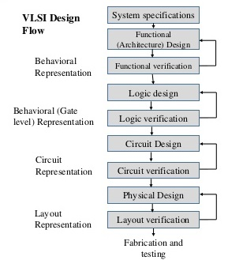

The flowchart of simplified VLSI design process is shown in figure below. The design process starts with a given specification of system such as which type of job can be performed by the system, whether the system is fully analog or digital or mixed-signal type etc. Also, there may be some specifications regarding the area, power dissipation etc. By keeping all these specifications in mind, the designer decides the type of blocks/modules that will be used and the specification or nature of each module. Sometimes, this type of design approach is termed as "top-down design methodology".
After defining the system level module descriptions, the architecture of each module should be clearly specified. For example, if one designer going to implement one ALU, the components such as adder, multiplier, etc. and their architecture must be clearly defined. There may be different types of adder architecture such as CLA adder, carry-save adder, Manchester carry adder, etc. To simplify the design, the designer may divide larger blocks to smaller sub-blocks. Sometimes the architectural design is also referred as functional design blocks.
